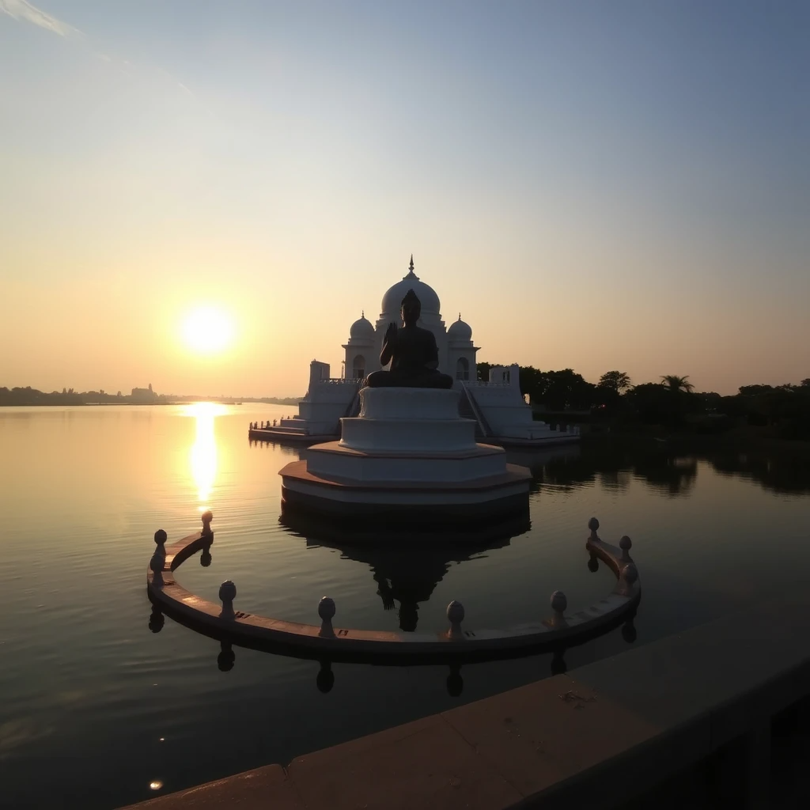
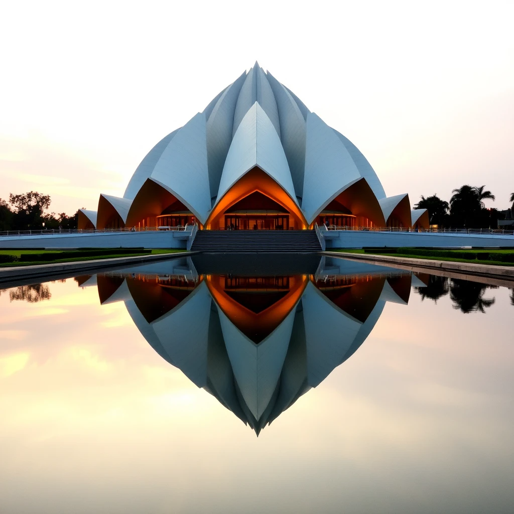
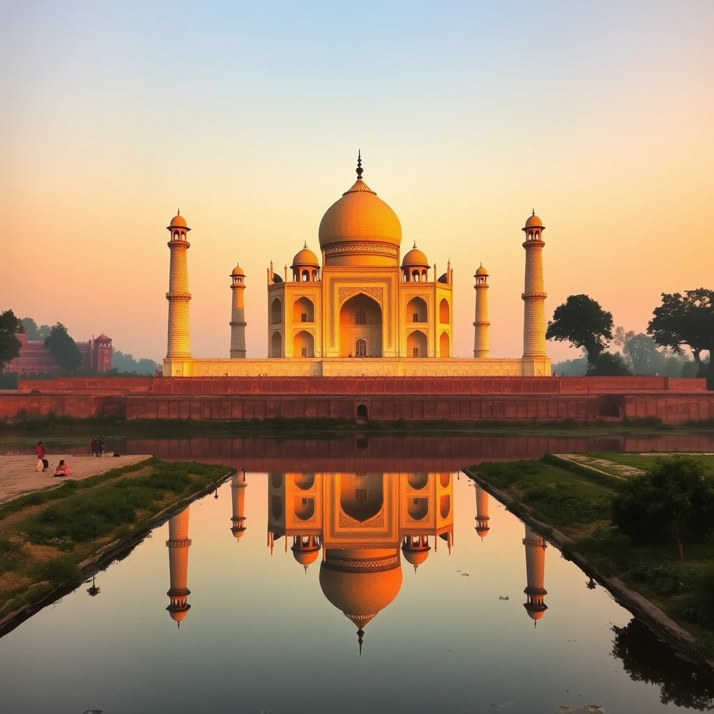

A night view of the Seine River with reflections of Paris lights.
Paris, often called the City of Love, is one of the most enchanting destinations in the world.
The Eiffel Tower stands tall as a global symbol of romance, while the Seine River flows gracefully through the heart of the city.
Paris is also home to world-renowned museums like the Louvre and Musée d'Orsay, showcasing timeless masterpieces including the Mona Lisa and impressionist art.
Beyond monuments, Paris offers vibrant neighborhoods filled with cafés, boutiques, and flower-lined streets.
Whether it's enjoying croissants in a street café, strolling down the Champs-Élysées,
or taking in the twinkling night lights, the city creates unforgettable experiences for travelers from every corner of the globe.

Hussain Sagar Lake with the Buddha statue in the center, during sunset.
Hyderabad, known as the City of Pearls, beautifully blends modernity with deep historical roots.
The iconic Charminar stands as a proud symbol of the city, surrounded by bustling bazaars that sell bangles, perfumes, and street food.
Golconda Fort and Chowmahalla Palace further highlight the grandeur of the city's rich past.
No trip to Hyderabad is complete without indulging in its world-famous biryani, a dish that has become a culinary emblem of the city.
From ancient monuments to flavorful traditions, Hyderabad captures the heart of every traveler seeking history, culture, and authentic Indian hospitality.
A train winding through the Nilgiri mountains
Nestled in the Nilgiri Hills, Ooty is one of India's most loved hill stations.
Known for its tea plantations, rolling green landscapes, and cool weather, it has earned the title Queen of the Hills.
Visitors often take a scenic ride on the Nilgiri Mountain Railway, a UNESCO World Heritage attraction that winds through misty valleys and lush forests.
Ooty's calm lakes, botanical gardens, and viewpoints like Doddabetta Peak make it a paradise for nature lovers.
Whether sipping hot tea amidst sprawling plantations or enjoying a quiet boat ride, Ooty offers an escape into nature's beauty and serenity.

Lotus Temple with reflection pools, during golden hour.
Delhi, the vibrant capital of India, is a city where the past and present exist side by side.
Historic landmarks like the Red Fort, Qutub Minar, and Humayun's Tomb narrate stories of India's powerful dynasties, while India Gate stands as a tribute to the nation’s heroes.
The city also boasts modern attractions such as Connaught Place, bustling markets, and metro connectivity.
What makes Delhi unique is its cultural blend-temples, mosques, churches, and gurudwaras all stand together, reflecting unity in diversity.
From savoring spicy street food to exploring colorful bazaars, Delhi offers travelers an energetic and unforgettable experience.
A campfire near a mountain lake under a starry night sky.
The mountains are a haven for both adventure seekers and peace lovers. Snow-capped peaks, lush green valleys, and flowing rivers create breathtaking views that leave travelers in awe.
Trekking trails and camping spots allow visitors to connect deeply with nature, while the cool breeze and panoramic landscapes provide much-needed relaxation away from busy city life.
At night, the mountains transform into a starry paradise, with skies so clear that constellations are visible to the naked eye.
Whether it's the Himalayas or smaller ranges, mountains offer an ideal blend of adventure, spirituality, and natural beauty, making them timeless destinations for travelers worldwide.

A sunrise view at the Taj Mahal, reflecting in the Yamuna River.
India is a land of incredible diversity, where every state tells a unique story. From the deserts of Rajasthan to the backwaters of Kerala, from the snowy Himalayas to the sun-kissed beaches of Goa, the country is a traveler's dream.
Its history is etched in majestic forts, palaces, and temples, while its festivals like Holi and Diwali paint the nation in vibrant colors.
The essence of India lies in its people, traditions, and cultures. Here, spirituality and modernity coexist harmoniously.
Visitors can witness classical dances, taste rich cuisines, and explore markets filled with spices, handicrafts, and textiles.
Truly, India is not just a destination—it is an experience that stays in one's heart forever.